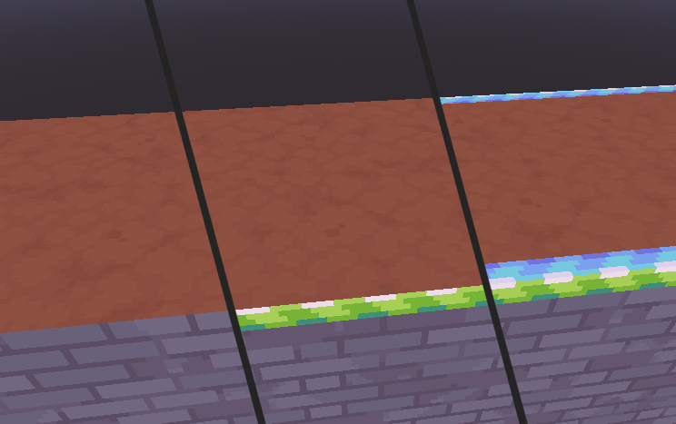
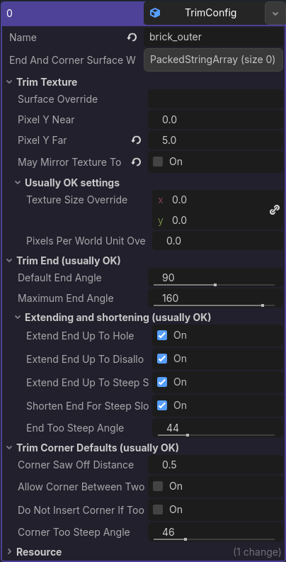
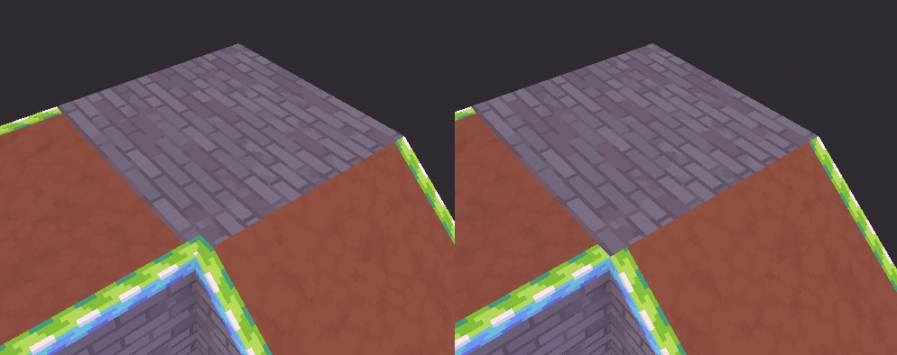
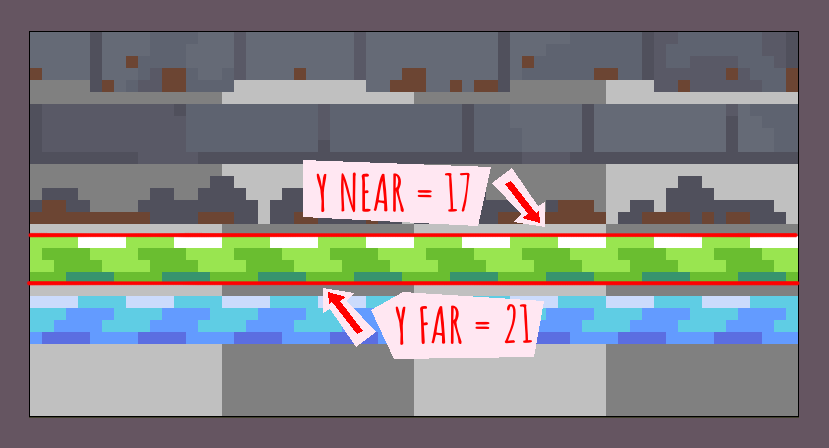
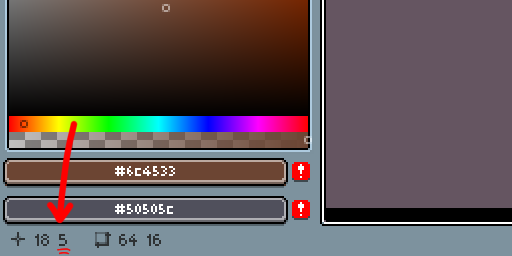
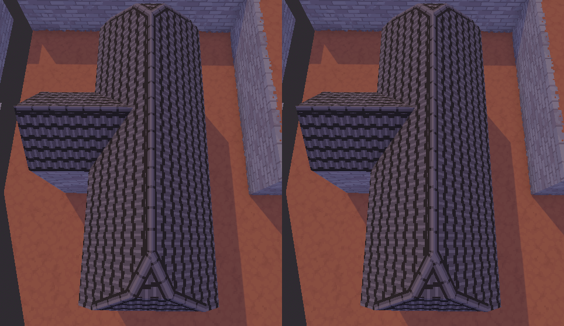
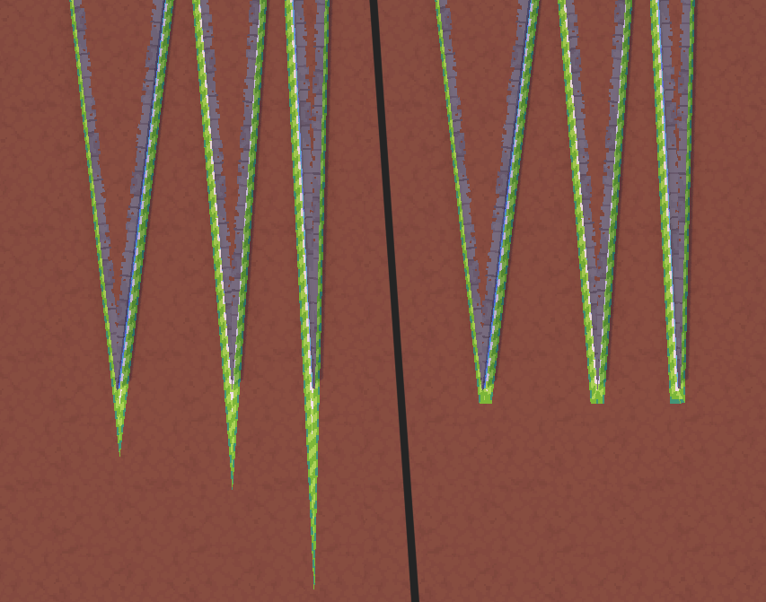

Trim configuration
A trim is an edge decoration. It's what AutoTrimmer is named after, and the most important part of a rulebook. In the trim configuration, you specify how the trim looks, and in the edge rules, you specify on which edges trims should be placed.
The most important part of this configuration is the part where you define the texture of the trim. Besides those, there are also a lot of settings about how the trim is generated (like at which angle the ends of a trim should be) — you only sometimes need to touch these settings.
To help you find the settings that are actually important, settings that you usually do not need to touch are hidden away in groups marked with “usually OK”.
In the image below you can see edges with no trims, a trim on only one side, and a trim on both sides of the edge.


Name
The name of a trim is used in the configuration of trim corners, trim groups and edge rules.
You can't have two trims with the same name.
End and corner surface whitelist (optional)
Prevents ends and corners from showing up on unintended surfaces.
You probably don't want the ridge of a roof to extend slightly onto the walls. However, if you don't forbid it and the angle between the roof and the wall is small, AutoTrimmer will extend the ridge trim onto the wall.
The surface whitelist determines on which surfaces this trim's ends and corners may be placed. When this list is not empty, corners and ends of this trim will only appear on the mentioned surfaces.
By default this is empty, which means that corners and ends will be placed on any surface.
Surface names are sensitive to capitals and spaces. For example, if your surface is called “brick” and you fill in “Brick” for this option, you'll get an error, because of the mismatch in the capital letter B.
In the image below, on the left side the green trim uses no whitelist, and on the right side it has a whitelist that only allows corners on dirt surfaces.

Trim texture
Surface override (optional)
If you don't want to use the default trim surface for this trim, you can write the name of the surface that you want to use here.
Pixel Y Near
A trim has a top and a bottom end. The setting “y near” is the y-coordinate of the end that's closest to the edge that's being decorated.
Trims must be laid out horizontally on the trim sheet. Vertical trim sheets are not supported.

In Aseprite, you can find the coordinate of the pixel that your cursor is hovering over in the bottom-left corner. The y-coordinate is the second of these two numbers. Other art software may or may not have similar functionality — often they don't, but it doesn't hurt to look it up.

Pixel Y Far
A trim has a top and a bottom end. This is the y-coordinate of the end that's furthest from the edge that's being decorated.
More documentation at “pixel y near”
May mirror texture to line up
When enabled, this trim will line up with itself when it appears on both sides of the edge.
This is exactly like “may mirror texture to line up” in the surface configuration.
Here's a more technical explanation: This setting makes the U-axis (horizontal axis) of the UV coordinates point in a more consistent direction in world space.
On the left, this setting is enabled. On the right it's disabled. Notice how none of the lines on the roof's ridge are aligned in the picture on the right. They're all one pixel off.

Texture size override (optional)
By default, a trim will derive its texture size from its surface. This “just works” in almost all situations, but if this somehow doesn't work for you, you can specify a different texture size here.
Pixels per world unit override (optional)
When you want a separate “pixels per world unit” value for this specific trim, you can fill it in here.
However, I don't recommend using different pixel densities in the same project, because it looks nicer when it's consistent. It can be good for background elements like far-away skyscrapers, though.
By default, this is 0 by 0 pixels, which is a special value and is treated like leaving it blank.
Trim end
Default end angle
By default, AutoTrimmer tries to make trims end that are at a 90° angle if it can. You can adjust that to a different angle here, although 90° is almost always the best choice.
Maximum end angle
The end of a trim may be extended beyond the default angle (90°) for a number of reasons (see the “extend” settings below). Here you can configure the maximum angle that a trim end can be extended to. I generally recommend leaving this setting at its default.
Extend end up to hole
When enabled, the trim end will be extended when there's a face with no neighbor ahead. Basically, this setting makes trim ends go up to the outermost edges of the mesh.
Extend end up to disallowed surface
If this trim has a whitelist, any face that's not on the whitelist is considered a disallowed surface. This setting makes the ends of trims connect all the way up to the disallowed surface, which generally looks better.
Extend end up to steep slope
If there's a steep slope that's further away than the default angle, this setting makes the trim end extend all the way up to the steep slope.
A steep slope is a face that's pretty steep relative to the face of the trim. Any angle greater than the “end too steep angle” is considered “pretty steep”.
Shorten end for steep slope
If there's a steep slope that's closer than the default angle, this setting makes the trim end shorter so that it doesn't go past the steep slope.
A steep slope is a face that's pretty steep relative to the trim's face. Any angle greater than the “end too steep angle” is considered “pretty steep”.
End too steep angle
This determines when a slope is “too steep” for a trim end, which affects the settings “extend end up to steep slope” and “shorten end for steep slope”.
Trim corner defaults
Corner saw-off distance
Set a maximum length for this trim corner.
When a trim corner is very sharp, it can get very long. As a matter of fact, it can basically get infinitely long. Infinitely long corners do not look very good, and because of that, we may have to saw off the tip of a corner.
This setting determines the distance at which the tip of the corner is sawn off. This should generally be approximately two or three times the width of the trim.

Allow corner between two edges of the same trim
By default, AutoTrimmer won't generate corners between two trims that are both connected to the same edge. Sometimes, you might want this. For example, if the trims represent a wooden beam on an outer edge of a building, it can be nice to have a cap at the ends of the beam.
Do not insert corner if too steep
A corner connects two trims and both of those trims have one main face. If this option is enabled and the two main faces of the trims are too steep relative to each other, no corner will be inserted. See “corner too steep angle”.
This also doesn't insert a corner if any face that the corner would go on top of is too steep.
Corner too steep angle
This determines when a slope is “too steep” for a trim corner, which affects the setting “do not insert corner if too steep”.